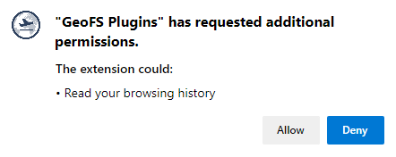

Installation
Wait! There's just one thing we need you to do for this extension to run properly.
This extension requires the
scripting permission in order
to inject scripts into GeoFS. Using that permission is a big deal,
since injecting scripts is one of the riskiest things a chrome
extension can do.
We're commited to security, and the extension you're using right now has passed multiple rigorous security reviews. We do that to bring you peace of mind in using this extension.
With that in mind, here's how to finish setup:
Click the button below:
You will see a popup that looks something like this:
Go ahead and click the "Allow" button. That will finish setup, and you'll be ready to use all of the extension's features!